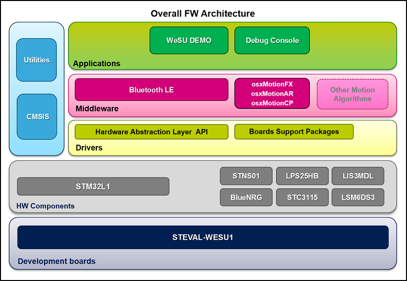

|
This software provides one demonstration firmware workspace that running on STM32 uses STM BlueNRG Bluetooth Low Energy protocol for comunicating the samples taken from various sensor devices using the ST WeSU dedicated App, available from Apple StoreTM and Google PlayTM stores. It contains also free comprehensive development firmware libraries and examples based on STM32-Cube.
STEVAL-WESU1 software features:
-
Complete middleware to build applications using inertial and environmental and power management sensors, leveraging Bluetooth Low Energy for communication of sensors data
-
Sample applications that the developer can use to start experimenting with the code.
-
References to free Android and iOS App that can be used along with the sample applications.
-
Free user-friendly license terms.
-
Examples implementation available.
The figure below shows the overall architecture.

Related information and documentation:
Update History
V1.1.0 / 24-October-2016Main Changes
- Added osxMotionFX Library version 1.0.7
- Update STM32CubeL1 to version 1.6.0
- Update Cortex-M CMSIS to version 4.5.0
- Update osxMotionAR Library to 1.2.0
Contents
- Projects.
- STEVAL-WESU1 .\Demonstrations\WESU_DEMO V1.1.0
- STEVAL-WESU1 .\Examples\Sensors_Read V1.1.0
Development Toolchains and Compilers
- IAR Embedded Workbench for ARM (EWARM) toolchain V7.50 + ST-Link
- RealView Microcontroller Development Kit (MDK-ARM) toolchain V5.20 + ST-LINK
- AC6 Open STM32 System Workbench 1.12.0 + ST-LINK
V1.0.0 / 15-Mar-2016
Main Changes
Contents
- Drivers.
- Cortex-M CMSIS V4.3
- STM32L1xx CMSIS V2.1.2
- STM32L1xx HAL V1.1.2
- BSP STEVAL-WESU1 V1.0.0
- Middlewares.
- STM32 BlueNRG Library V2.2.0
- Sensor Fusion Demo Library V1.3.0
- osxMotionAR Sensor Fusion Library V1.1.0
- osxMotionCP Sensor Fusion Library V1.0.0
- Projects.
- STEVAL-WESU1 .\Demonstrations\WESU_DEMO V1.0.0
- STEVAL-WESU1 .\Examples\Sensors_Read V1.0.0
Development Toolchains and Compilers
- IAR Embedded Workbench for ARM (EWARM) toolchain V7.50 + ST-Link
- RealView Microcontroller Development Kit (MDK-ARM) toolchain V5.17 + ST-LINK
- AC6 Open STM32 System Workbench 1.7.0 + ST-LINK
Licenses
The software is licensed under ST SW Limited License Agreement. You may not use this file except in compliance with the License. You may obtain a copy of the License at:
LIMITED LICENSE AGREEMENT FOR ST MATERIALS EVALUATION
Unless required by applicable law or agreed to in writing, software
distributed under the License is distributed on an "AS IS" BASIS,
WITHOUT WARRANTIES OR CONDITIONS OF ANY KIND, either express or implied.
See the License for the specific language governing permissions and
limitations under the License.
For
complete documentation on STM32 Microcontrollers visit www.st.com/STM32
|